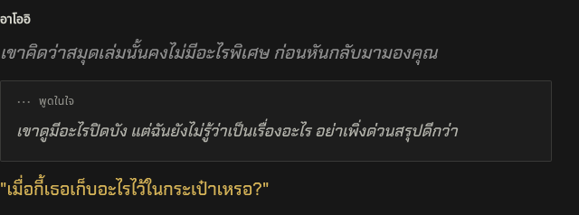
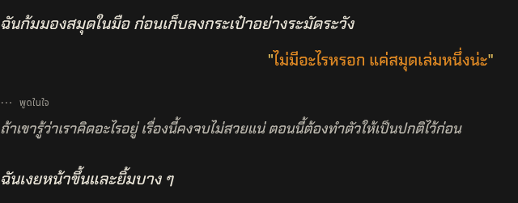

ROLEFORGE / INNER THOUGHTS · PREVIEW 02ความคิดที่แยกจากคำพูด
ผู้เล่นใช้ |ความคิด| ตามเดิม · NPC ใช้กล่องคิดในใจแยกจาก Narrative · ปิด Dialogue แล้วยังเห็นความคิด
เพิ่มกติกาใน prompt ว่าความคิดไม่ใช่เสียงพูด และการแสดงให้ผู้อ่านเห็นไม่ทำให้ตัวละครอื่นรู้เนื้อหา ยังไม่เข้า main
PC

NPC: คำบรรยาย → ความคิด → บทพูด เมื่อปิดกรอบ
ผู้เล่น: ความคิดสีหม่น ไม่มีกรอบNPC thought · FolioNPC thought · Aincradมือถือ
คำสั่ง AI ที่เพิ่ม
NPC ห้ามได้ยินหรืออ้างคำในความคิดผู้เล่น ตอบโต้ได้จากหลักฐานที่มองเห็นหรือได้ยินจริงเท่านั้น ข้อยกเว้นต้องเป็นพลังอ่านใจที่ตั้งไว้และตรงเงื่อนไข ความคิด NPC ไม่ถ่ายทอดความรู้ให้ผู้อ่านในบทบาทตัวละครเช่นกัน
AI ใช้ <tr-thought name="NPC">ความคิด</tr-thought> เองในคำตอบใหม่ ไม่เปลี่ยน *ข้อความ* ทั่วไปให้เป็นความคิดและไม่แก้ประวัติเก่า กล่องไม่ถูกพากย์โดย Voice Addon
ผ่าน 1,862 tests และ Native SillyTavern บน Chromium/WebKit ทั้ง PC/มือถือจำลองครบ 5 ธีม ทดสอบทั้ง Shared/RoleForge renderer คำสั่งถูกส่งเข้า context จริง แต่รอบนี้ไม่ได้ใช้โมเดลภายนอกเพื่อวัดการตอบตามกติกา
วิธีใช้และรายละเอียด · ผลทดสอบ · ตัวอย่างภาษาอังกฤษ